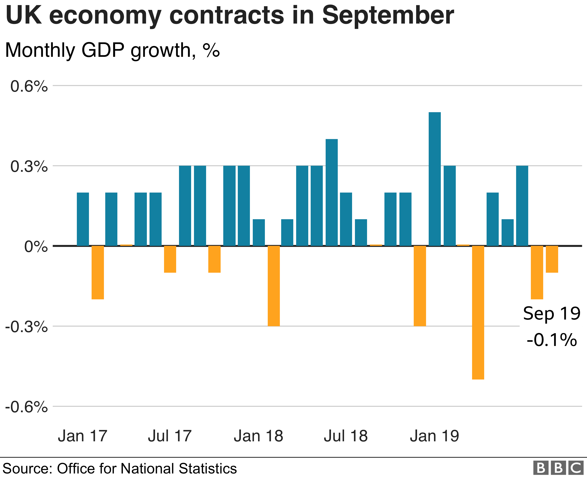

Britain's economy has grown at the slowest annual rate in
almost a decade, according to official figures.
Year-on-year growth in the three months to end-September
slowed to 1% from 1.3% in the second quarter, the Office for
National Statistics said.
An ONS spokesman said: "Looking at the picture over the last
year,
growth slowed to its lowest rate in almost a decade."
But the economy avoided a recession by growing 0.3% in the
third quarter.
The economy had shrunk in the second quarter and two
quarters of contraction would have signalled a recession.
Britain's economy has grown at the slowest annual rate in
almost a decade, according to official figures.
Year-on-year growth in the three months to end-September
slowed to 1% from 1.3% in the second quarter, the Office for National
Statistics said.
An ONS spokesman said: "Looking at the picture over the last
year, growth slowed to its lowest rate in almost a decade."
But the economy avoided a recession by growing 0.3% in the
third quarter.
The economy had shrunk in the second quarter and two
quarters of contraction would have signalled a recession.
What happened in the three-month period?
Despite the economy expanding by 0.3% in the third quarter,
it was not as fast as the 0.4% forecast by economists, including at
the Bank of England.
A statistician at the ONS said GDP grew "steadily" in the third quarter. That was largely as a result of a "strong July".
"The underlying trade deficit narrowed, mainly due to growing exports of both goods and services."
What happened in September?
In the month of September, GDP fell by 0.1%, as had been
expected.
But the ONS revised down the contraction in August to 0.2%
from
0.1%.
It was the growth of 0.3% in July that drove the economy in
the
whole of the third quarter.

Tej Parikh, chief economist at the Institute of Directors,
said
that
"a return to growth is welcome news, but narrowly avoiding a
recession is nothing to celebrate".
"The UK economy has been in stop-start mode all year, with
growth
punctuated by the various Brexit deadlines," he added.
Ms Gregory added: "While the election is just under five
weeks
away,
clearly this isn't the good news the government might have hoped
for."
Was Brexit stockpiling important?
The economy had unexpectedly contracted by 0.2% in the
second
quarter - the March to June period - when Brexit stockpiles were
unwound after the first Brexit date of 29 March.
Samuel Tombs, economist at Pantheon Macroeconomics, said a
"renewed
stockpiling boost" failed to materalise in the third quarter.
"It possible that stockpiling occurred to a greater extent
at
the
start of the fourth quarter," he said, adding fourth-quarter
growth
might not be depressed to the extent he expected.
But Mr Parikh said that "the final quarter of 2019 could be
weaker
as stockpiles continue to be run down".
What are the politicians saying?
The Chancellor, Sajid Javid, said there figures were
"another
welcome sign that the fundamentals of the UK economy are strong.
Under the conservatives, we've seen nine consecutive years of
growth".
He added: "What it also shows is the real risk to growth in
our
economy is Corbyn's Labour. If they get their way, two
referendums
in 2020, eye watering amounts of spending and borrowing and
debt,
that kind of economic vandalism will bring growth in this
country to
a halt."
But John McDonnell, the shadow chancellor, said: "The fact
that
the
government will be celebrating 0.1% growth in the last six
months is
a sign of how low their hopes and expectations for our economy
are."
Ed Davey, the Liberal Democrat's deputy leader said: "The
economy
under the Tories is anaemic." As much as it would be a relief that a formal recession has
been avoided, the picture is very sluggish, in keeping with what
has
been called a "slow puncture" economy.
Growth of 0.3% between July and September is clearly
preferable
to another quarter of contraction, but still slow by normal
historical standards.
Indeed, comparing the third quarter this year with the same
period last year, growth of just 1% is the slowest since the
aftermath of the financial crisis. It is the weakest two
quarters
since the financial crisis.
The background is a slower European and world economy
reeling
from trade wars.
But years of damaged business investment, after the Brexit
referendum, are taking their toll on growth.
The latest figures in the month of September showed a
contraction of 0.1%. Data has been volatile this year, with car
industry shutdowns and two bouts of ultimately unneeded no-deal
Brexit stockpiling.
So recession avoided, but this is not the "bounce back"
promised
by some.